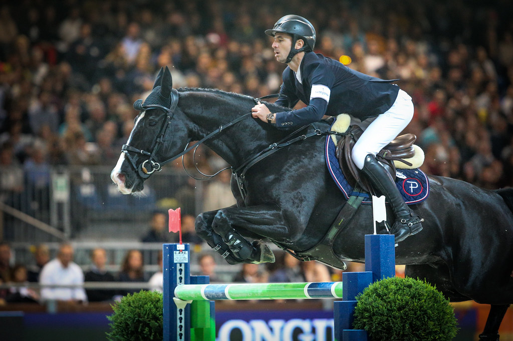

Steve Guerdat gana el Prix Saur del CSIO5* de La Baule con Lancelotta
El jinete suizo Steve Guerdat se ha llevado este sábado el Prix Saur del Jumping International CSIO5* de La Baule, una de las grandes pruebas del programa del concurso francés y antesala de la Copa de Naciones de la tarde. Guerdat firmó un crono de 36,57 segundos en cero con Lancelotta, dejando el segundo puesto…

Uso editorial
El jinete suizo Steve Guerdat se ha llevado este sábado el Prix Saur del Jumping International CSIO5* de La Baule, una de las grandes pruebas del programa del concurso francés y antesala de la Copa de Naciones de la tarde. Guerdat firmó un crono de 36,57 segundos en cero con Lancelotta, dejando el segundo puesto para el estadounidense McLain Ward con High Star Hero (37,40) y el tercero para el egipcio Nayel Nassar con Orphea HQ (38,03).
Los tres binomios cuajaron recorridos sin penalización en una pista exigente sobre la arena de la Baule, donde la diferencia se decidió en el cronómetro. Guerdat exhibió la velocidad y la regularidad de Lancelotta, un caballo que arrastra una temporada sobresaliente en el circuito internacional. Ward, que llega a La Baule como integrante del equipo de Estados Unidos para la Copa de Naciones, confirmó el buen estado de forma de High Star Hero, mientras que Nassar completó un podio íntegramente sin faltas.
La prueba forma parte del bloque puntuable para el Longines Ranking, el sistema que ordena cada mes la lista mundial de jinetes de salto. La presencia de Guerdat, Ward, Nassar y otros nombres del top mundial entre los más de cincuenta participantes confirmó el nivel del cartel reunido en La Baule, sede tradicional de la Copa de Naciones francesa. Los puntos repartidos en el Prix Saur consolidan a Guerdat en la pelea por los primeros puestos del ranking en una temporada muy competida.
Mejor español: 49º Armando Trapote con Gin Tonic Van Het Gerendal Z (73,20).
— Redacción de Hípica al Día